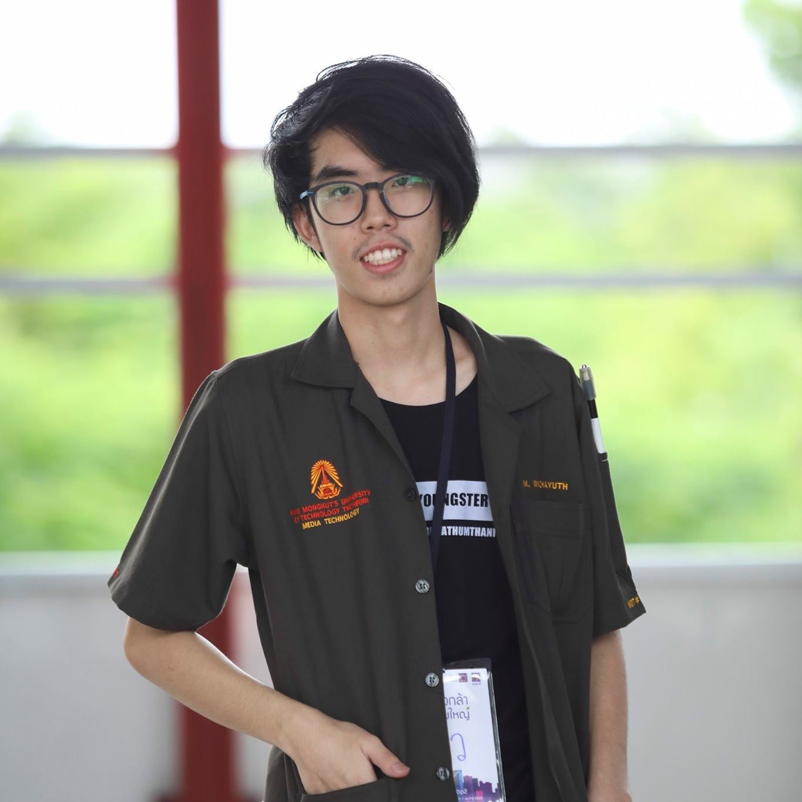

Wichayuth Luaengtawekul
New (20 Y)
C# Programmer
I'm a Programmer with 2 years of experience in Unity Engine. My Strengths is Fast Learner and Determined.
I want to learn about making a game more deeply and want to gain more experience in programming skills.
Skills
- Unity Engine
- C# Coding
- Adobe Photoshop
- Adobe After Effect
- Zbrush
Interests
- Game
- Game Design
- Game Programming
Languages
Education
Princess Chulabhorn Science High Schools Pathum Thani (PCSHSP).
Mathematics-Science Program.
05/2014 - 03/2017
GPAX : 3.50
King Mongkut's University of Technology Thonburi (KMUTT).
Media Technology, Game Development.
07/2017 - Present
GPAX : 3.51
Activities
Tech Asa (2017,2018,2019)
volunteer camp. by MDT, KMUTT.
Idia Camp #7 (2018)
Maya Modelling Lab Staff. by MDT, KMUTT.
Idia Camp #8 (2019)
Maya Modelling Lab Staff. by MDT, KMUTT.
Torkla Project #7 (2019)
Funded for the development of "Gunman And The Witch". by SCB foundation.
Student Entrepreneurship Festival (SENT FEST) (2019)
The Exhibitor. by KMUTT Hatch.
NECTEC ACE (2019)
The Exhibitor. by NECTEC.